Reconstruction Anomaly: What the Residual Misses
Abstract
A frozen 784–32–784 MNIST autoencoder supplies per-image squared reconstruction residuals. Three scoring rules are calibrated separately at the nearest-rank 95th percentile of 200 nominal validation scores, with a strict greater-than flag. All ten digit classes are nominal. The held-out 200 images receive three predetermined transformations, retaining all 600 paired synthetic cases. Autoencoder residuals detect every white-patch case and 99.5% of right shifts, but only 2% of darkened images; darkening AUROC is .4028. A simple mean-ink rule has different strengths and misses. Nominal held-out false-positive rates are 9%,7%,6% for autoencoder, fitting-mean and ink scores, versus 5% on calibration. A complete native prerequisite shows all 96 fitting updates; the application adds zero. Validation reuse, prevalence, paired sources and the separate blank control remain explicit.
A score, a calibration rule and an evaluation pool have different jobs
The encoder was fitted to 1,000 nominal images; every digit class is nominal. Its fixed reconstruction is compared with the observed input, not with a clean target available at deployment. A fitting-only mean image supplies a nonlearned residual baseline. An absolute mean-ink deviation supplies a simple brightness baseline. Each rule gets its own threshold from the same 200 clean validation images. No transformed cases or held-out test outcomes select those thresholds.
The prerequisite already uses these validation images for encoder checkpoint selection. They are reused for threshold calibration, rather than reserved as a fresh calibration pool. The resulting 5% calibration false-positive rate is an empirical order-statistic result; there is no independent-holdout or distribution-free deployment guarantee. The 200 test images remain held out from model/threshold selection.
#include <dm/dm.hpp>
int main() {
std::filesystem::create_directories("build");
dm::graphics::Diagram d(47, 1250);
dm::graphics::DiagramNodeStyle s;
s.width = 7.3;
s.height = 3.;
s.font_size = 18;
d.node("fit", {0, 7}, "1,000 nominal fitting images\nEncoder + mean references", s)
.node("model", {9, 7}, "Frozen selected encoder\n96 prerequisite updates", s)
.node("valid", {18, 7}, "200 validation images\nReused after model selection", s)
.node("threshold", {27, 7}, "Three explicit thresholds\nNearest rank95%", s)
.node("test", {0, 0}, "200 held-out originals\nAll digit classes nominal", s)
.node("stress", {9, 0}, "Original + 3 transforms\n200 nominal + 600 paired", s)
.node("score", {18, 0}, "AE / mean / ink scores\nPer-case diagnostics", s)
.node("rank", {27, 0}, "Strict flags + ROC/AP\nNo threshold selection here", s)
.edge("fit", "model")
.edge("model", "score")
.edge("valid", "threshold")
.edge("threshold", "rank")
.edge("test", "stress")
.edge("stress", "score")
.edge("score", "rank")
.text(
{13.5, -5}, "The blank image is a separate control, excluded from all ranking pools.", 20)
.save_svg("build/anomaly_method.svg");
}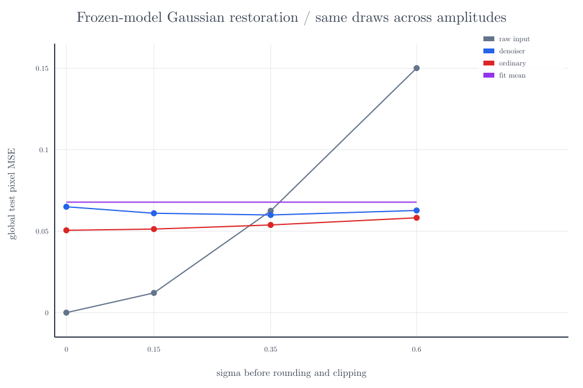
A hand-checkable residual
For a sample with D coordinates, the score is the feature-order sum of squared differences, divided by D. Inputs widen to double before subtraction. Rows [0,1] and [2,3], reconstructed as [0,0], score (0²+1²)/2=.5 and (2²+3²)/2=6.5. The score is not the squared difference of row means, a batch mean or a clipped-pixel loss. These diagnostic functions deliberately stop gradients and leave caller flags unchanged; the prerequisite uses a separate training loss.
#include <dm/dm.hpp>
int main() {
namespace n = dm::nn;
const auto original = n::tensor({0., 1., 2., 3.}, {2, 2}), reconstructed = n::zeros({2, 2});
const auto scores = n::models::ReconstructionScores(original, reconstructed);
std::print(
"Two per-case mean squared residuals: {:.1f}, {:.1f}.\n", scores.at({0}), scores.at({1}));
auto p = dm::graphics::RPlot::create();
p.points({0, 2}, {1, 3}, "Original rows", {37, 99, 235}, 5.)
.points({0}, {0}, "Reconstruction", {220, 38, 38}, 5.)
.lines({0, 0}, {0, 1}, "", {100, 116, 139}, 1.5)
.lines({0, 2}, {0, 3}, "", {100, 116, 139}, 1.5)
.x_limits(-.4, 2.6)
.y_limits(-.4, 4.3)
.x_label("Coordinate0")
.y_label("Coordinate1")
.title("Per-case residual: squared displacement divided by two")
.save_svg("build/anomaly_toy_residual.svg");
}Two per-case mean squared residuals: 0.5, 6.5.
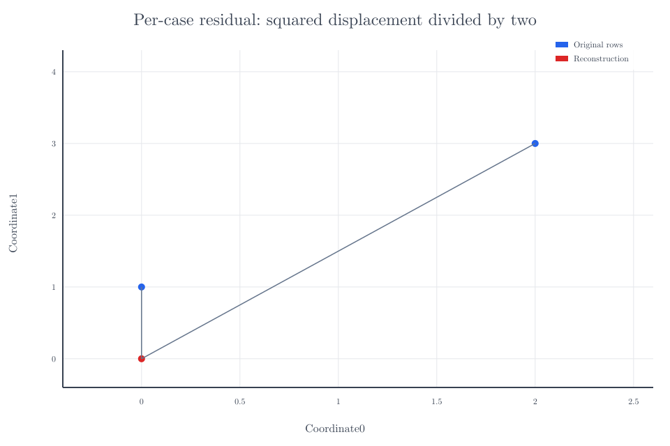
Nearest rank and strict inequality can be checked separately
Sorting N nominal scores and choosing one-based rank ceil(.95*N) gives an existing score; there is no interpolation. Scores 0,...,19 give rank19, threshold18. A score equal to18 is unflagged;19 is flagged. The API uses the explicit double product without a rounding fuzz. This is the inverse empirical-CDF nearest-rank convention, related to [R quantile type1](https://stat.ethz.ch/R-manual/R-devel/library/stats/html/quantile.html), with an explicit positive quantile and no fuzz rather than R's default interpolation.
#include <dm/dm.hpp>
int main() {
namespace n = dm::nn;
const auto scores = n::arange(0, 20);
const double threshold = n::models::NominalThreshold(scores);
const auto flags = n::greater(scores, threshold);
std::print(
"Threshold {:.0f}; strict flags {}/20. Value18 stays unflagged.\n",
threshold,
n::count_nonzero(flags).item<std::int64_t>());
auto p = dm::graphics::RPlot::create();
p.points(
n::arange(1, 21).to_vector<double>(),
scores.to_vector<double>(),
"Nominal scores",
{37, 99, 235},
4.)
.lines({0, 21}, {threshold, threshold}, "Threshold18", {100, 116, 139}, 1.5)
.points({20}, {19}, "Strict flag", {220, 38, 38}, 5.)
.x_limits(0, 21)
.y_limits(-1, 27)
.x_label("Sorted nominal rank")
.y_label("Score")
.title("Nearest-rank threshold ties are unflagged")
.save_svg("build/anomaly_toy_threshold.svg");
}Threshold 18; strict flags 1/20. Value18 stays unflagged.
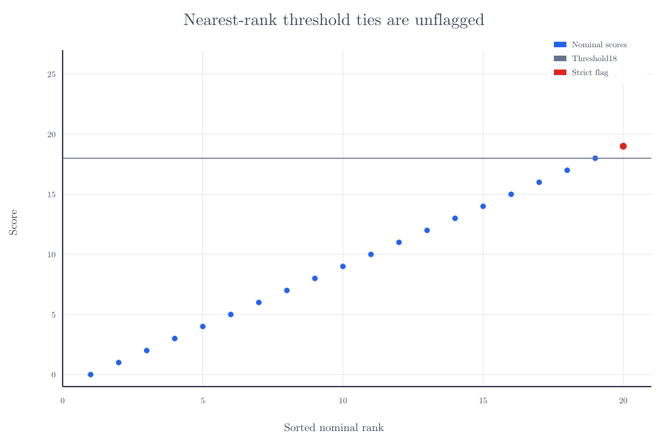
Tied ranking groups do not receive an optimistic ordering
Nominal scores [1,2] and anomaly scores [2,3] have four cross-pool comparisons. The anomaly2 beats nominal1 and ties nominal2; anomaly3 beats both. AUROC is3.5/4=.875. Descending tied groups give recall increments1/2 and1/2 at precision1 and2/3, so noninterpolated AP is5/6. The threshold2 flags no nominal case and only anomaly3. A constant-score rule has AUROC.5 and AP equal to the supplied anomaly prevalence; equal pools here give AP baseline.5. The native adapter reuses the canonical tied ROC/AP functions, following their [ROC](https://scikit-learn.org/stable/modules/generated/sklearn.metrics.roc_auc_score.html) and [noninterpolated AP](https://scikit-learn.org/stable/modules/generated/sklearn.metrics.average_precision_score.html) conventions.
#include <dm/dm.hpp>
int main() {
namespace n = dm::nn;
const auto r = n::models::RankAnomalies(n::tensor({1., 2.}, {2}), n::tensor({2., 3.}, {2}), 2);
std::print(
"AUROC {:.6f}; AP {:.6f}; strict FPR {:.1f}, TPR {:.1f}.\n",
r.auroc,
r.average_precision,
r.normal_fpr,
r.anomaly_tpr);
auto p = dm::graphics::RPlot::create();
p.lines({0, 0, .5, 1}, {0, .5, 1, 1}, "Grouped ROC", {37, 99, 235}, 2.)
.lines({0, 1}, {0, 1}, "Chance", {100, 116, 139}, 1.)
.points({r.normal_fpr}, {r.anomaly_tpr}, "Threshold2", {220, 38, 38}, 5.)
.x_limits(-.05, 1.05)
.y_limits(-.05, 1.3)
.x_label("Nominal false-positive fraction")
.y_label("Anomaly true-positive fraction")
.title("A tied score group contributes half credit to AUROC")
.save_svg("build/anomaly_toy_ranking.svg");
}AUROC 0.875000; AP 0.833333; strict FPR 0.0, TPR 0.5.
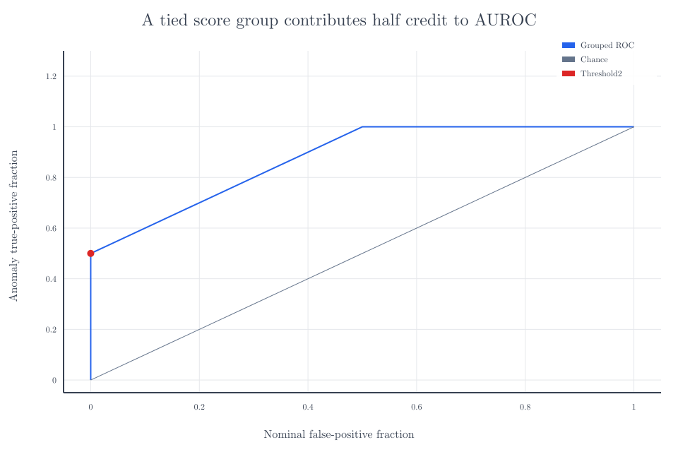
Complete native prerequisite and its reused validation pool
Native MNIST preparation retains the fixed saliency pools:1,000 fitting,200 validation and200 test images with disjoint source identities and balanced digit classes. Seed1471 initializes four leaves/50,992 values. BatchOrder seed1483 supplies32-row batches, including the last eight rows of each epoch. Three epochs of Adam(.003) give96 updates; validation Float64 pixel MSE selects the checkpoint. The visible program saves initial/selected parameters and measured timing. The same validation pool later calibrates thresholds, as stated above.
#include <dm/dm.hpp>
namespace n = dm::nn;
double Score(const n::Tensor& prediction, const n::Tensor& target) {
return n::mean(
n::square(n::cast(prediction, n::DType::Float64) - n::cast(target, n::DType::Float64)))
.item();
}
int main() {
std::filesystem::create_directories("build");
const std::filesystem::path cache = dm::datasets::data_home();
dm::datasets::prepare_example_data("mnist-assets", cache.string());
const auto pools = n::models::LoadSaliency(cache / "saliency");
const auto fit = pools[0].images.reshape({1000, 784}),
validation = pools[1].images.reshape({200, 784}),
test = pools[2].images.reshape({200, 784});
n::ParameterStore p(1471);
{
n::NoGradGuard guard;
n::models::UndercompleteAutoencoder(p, n::zeros({1, 784}));
}
if (p.count() != 50992 || p.size() != 4)
return 1;
p.save("build/anomaly_initial_encoder.npz");
n::OptimizerConfig config;
config.kind = n::OptimizerKind::Adam;
n::Optimizer optimizer(p, .003, config);
n::BatchOrder batches(1000, 32, 1483);
double best = std::numeric_limits<double>::infinity();
int selected = 0, updates = 0;
std::vector<double> epochs, training, valid;
const auto started = std::chrono::steady_clock::now();
std::print(
"| epoch | fitting pre-update pixel MSE | validation post-epoch MSE |\n|---:|---:|---:|\n");
for (int epoch = 1; epoch <= 3; ++epoch) {
batches.begin_epoch();
double total = 0;
std::size_t seen = 0;
for (;;) {
const auto rows = batches.next();
if (rows.empty())
break;
const auto image = n::take_rows(fit, rows),
out = n::models::UndercompleteAutoencoder(p, image).reconstruction;
const auto loss = n::mse(out, image);
const auto value = loss.item();
if (!std::isfinite(value))
return 1;
total += value * rows.size();
seen += rows.size();
optimizer.minimize(loss);
++updates;
}
n::NoGradGuard guard;
const auto error =
Score(n::models::UndercompleteAutoencoder(p, validation).reconstruction, validation);
if (seen != 1000 || !std::isfinite(error))
return 1;
if (error < best) {
best = error;
selected = epoch;
p.save("build/anomaly_selected_encoder.npz");
}
epochs.push_back(epoch);
training.push_back(total / seen);
valid.push_back(error);
std::print("| {} | {:.9f} | {:.9f} |\n", epoch, total / seen, error);
}
const double seconds =
std::chrono::duration<double>(std::chrono::steady_clock::now() - started).count();
if (updates != 96 || selected < 1)
return 1;
p.load("build/anomaly_selected_encoder.npz");
n::NoGradGuard guard;
const auto test_result = n::models::UndercompleteAutoencoder(p, test);
std::ofstream meta("build/anomaly_prerequisite.json");
meta.precision(17);
meta << "{\"updates\":" << updates << ",\"selected_epoch\":" << selected
<< ",\"validation_mse\":" << best << ",\"training_seconds\":" << seconds << "}\n";
if (!meta)
return 1;
std::print(
"\nSelected epoch {} after {} Adam updates. Held-out MSE {:.9f}.\n",
selected,
updates,
Score(test_result.reconstruction, test));
auto plot = dm::graphics::RPlot::create();
plot.lines(epochs, training, "Fit pre-update", {37, 99, 235}, 2.)
.lines(epochs, valid, "Valid post-epoch", {220, 38, 38}, 2.)
.x_label("Epoch")
.y_label("Mean squared pixel error")
.title("Visible prerequisite: 96 Adam updates, then a frozen checkpoint")
.save_svg("build/anomaly_prerequisite.svg");
}| epoch | fitting pre-update pixel MSE | validation post-epoch MSE |
|---|---|---|
| 1 | 0.109698705 | 0.066644995 |
| 2 | 0.065107134 | 0.055756478 |
| 3 | 0.055117222 | 0.048601794 |
Selected epoch 3 after 96 Adam updates. Held-out MSE 0.050325811.

Complete frozen application: every score, transformation and ranking
The fitting-mean baseline sums fitting pixels in sample-order double then rounds to Float32, as in the original. Its mean ink reference averages these rounded nonnegative pixel means in feature order; deviation from zero equals their mean because every entry is nonnegative. The caller explicitly computes this reference before test scoring.
All200 held-out originals receive each fixed transformation: an8×8 white upper-left patch, Float32 multiplication by.35, and a six-column right shift with zero fill. Every digit class remains nominal; the binary evaluation labels identify these artificial transformations. Darkening or translation may be legitimate domain variation. The600 transformed cases are paired versions of200 sources, not600 independent new source examples. A blank image is retained as a separate degenerate-input control and excluded from ranking pools.
Each rule uses only its200 nominal validation scores for the explicit95th-percentile threshold. The table retains all nine combinations, including failures, and checks every frozen model value for immutability. AP uses200 nominal/200 transformed cases for each type; changing that prevalence changes AP. No threshold sweep on test outcomes is performed.
#include <dm/dm.hpp>
namespace n = dm::nn;
namespace m = n::models;
void Require(bool condition, const std::string& message) {
if (!condition)
throw std::runtime_error(message);
}
int main() {
const std::filesystem::path cache = dm::datasets::data_home(), root = "build/anomaly";
std::filesystem::create_directories(root);
dm::datasets::prepare_example_data("mnist-assets", cache.string());
const auto pools = m::LoadSaliency(cache / "saliency");
n::ParameterStore p(1471);
{
n::NoGradGuard guard;
m::UndercompleteAutoencoder(p, n::zeros({1, 784}));
}
p.load("build/anomaly_selected_encoder.npz");
Require(p.count() == 50992, "Original frozen architecture");
n::NamedTensors before;
for (const auto& name : p.names())
before.emplace_back(name, p.at(name).detach().clone());
n::NoGradGuard guard;
// Fitting pixels sum in sample order in Float64, then round once to Float32.
const auto mean = n::cast(
n::mean(n::cast(pools[0].images.reshape({1000, 784}), n::DType::Float64), {0}),
n::DType::Float32);
// All fitting pixel means are nonnegative: deviation from zero equals their mean.
// InkScores keeps the original feature-order Double accumulation of these rounded means.
const double fit_ink = m::InkScores(mean.reshape({1, 784}), 0).item();
std::map<std::string, n::Tensor> arrays;
for (int k = 0; k < 3; ++k) {
const std::string split = k == 0 ? "fit" : k == 1 ? "validation" : "test";
const auto out =
m::UndercompleteAutoencoder(p, pools[k].images.reshape({pools[k].images.size(0), 784}));
arrays.emplace(split + "_images", pools[k].images);
arrays.emplace(split + "_labels", pools[k].labels);
arrays.emplace(split + "_source_ids", pools[k].source);
arrays.emplace(split + "_reconstruction", out.reconstruction);
arrays.emplace(
split + "_ae_score", m::ReconstructionScores(pools[k].images, out.reconstruction));
arrays.emplace(
split + "_mean_score",
m::ReconstructionScores(
pools[k].images, n::broadcast_to(mean.reshape({1, 784}), out.reconstruction.shape())));
arrays.emplace(split + "_ink_score", m::InkScores(pools[k].images, fit_ink));
}
arrays.emplace("fit_pixel_mean", mean);
const std::vector<std::string> names{"patch", "darkening", "shift"};
for (int kind = 0; kind < 3; ++kind) {
const auto image = m::AnomalyCorruption(pools[2].images, kind);
const auto out = m::UndercompleteAutoencoder(p, image.reshape({200, 784}));
arrays.emplace(names[kind] + "_images", image);
arrays.emplace(names[kind] + "_reconstruction", out.reconstruction);
arrays.emplace(names[kind] + "_ae_score", m::ReconstructionScores(image, out.reconstruction));
arrays.emplace(
names[kind] + "_mean_score",
m::ReconstructionScores(
image, n::broadcast_to(mean.reshape({1, 784}), out.reconstruction.shape())));
arrays.emplace(names[kind] + "_ink_score", m::InkScores(image, fit_ink));
}
const auto blank = n::zeros({1, 28, 28, 1}),
blank_output = m::UndercompleteAutoencoder(p, blank.reshape({1, 784})).reconstruction;
arrays.emplace("blank_image", blank);
arrays.emplace("blank_reconstruction", blank_output);
arrays.emplace("blank_ae_score", m::ReconstructionScores(blank, blank_output));
for (const auto& [name, value] : before)
Require(n::equal_bits(value, p.at(name)), "All50992 frozen model values immutable");
n::save_npz((root / "analysis.npz").string(), n::NamedTensors(arrays.begin(), arrays.end()));
n::save_npz((root / "model_arrays.npz").string(), before);
std::filesystem::copy_file(
cache / "saliency/manifest.json",
root / "data_manifest.json",
std::filesystem::copy_options::overwrite_existing);
std::ofstream table(root / "rankings.tsv"), meta(root / "metrics.json");
table.precision(17);
meta.precision(17);
table << "score\tcorruption\tvalidation_nominal_threshold\tvalidation_nominal_fpr\ttest_nominal_"
"fpr\tcorruption_tpr\tauroc\taverage_precision\n";
meta << "{\"additional_training_updates\":0,\"fit_records\":1000,\"validation_nominal_records\":"
"200,\"test_nominal_records\":200,\"each_corruption_records\":200,\"quantile\":0.95,"
"\"fit_mean_ink\":"
<< fit_ink << ",\"blank_ae_score\":" << arrays.at("blank_ae_score").item()
<< ",\"thresholds\":{";
std::print(
"| score | corruption | threshold | calibration FPR | test FPR | TPR | AUROC | AP "
"|\n|---|---|---:|---:|---:|---:|---:|---:|\n");
bool first = true;
for (const std::string score : {"ae", "mean", "ink"}) {
const auto validation = arrays.at("validation_" + score + "_score");
const double threshold = m::NominalThreshold(validation);
const double calibration_fpr =
n::mean(n::cast(n::greater(validation, threshold), n::DType::Float64)).item();
if (!first)
meta << ',';
first = false;
meta << '"' << score << "\":" << threshold;
for (const auto& name : names) {
const auto r = m::RankAnomalies(
arrays.at("test_" + score + "_score"),
arrays.at(name + "_" + score + "_score"),
threshold);
table << score << '\t' << name << '\t' << threshold << '\t' << calibration_fpr << '\t'
<< r.normal_fpr << '\t' << r.anomaly_tpr << '\t' << r.auroc << '\t'
<< r.average_precision << '\n';
std::print(
"| {} | {} | {:.9f} | {:.3f} | {:.3f} | {:.3f} | {:.6f} | {:.6f} |\n",
score,
name,
threshold,
calibration_fpr,
r.normal_fpr,
r.anomaly_tpr,
r.auroc,
r.average_precision);
}
}
meta << "}}\n";
for (int k = 0; k < 10; ++k) {
const int row = k * 199 / 9;
std::vector<n::Tensor> tiles;
for (const auto& key :
{"test_images",
"test_reconstruction",
"patch_images",
"patch_reconstruction",
"darkening_images",
"darkening_reconstruction",
"shift_images",
"shift_reconstruction"})
tiles.push_back(n::take_rows(arrays.at(key), {row}).reshape({28, 28, 1}));
n::save_image_grid(
n::tile(n::stack(tiles, 0), {1, 1, 1, 3}),
(root / ("case_" + std::to_string(k) + ".png")).string(),
8,
0,
1,
4,
220. / 255.,
3);
}
Require(bool(table) && bool(meta), "Complete all nine ranking records");
std::print(
"\nAll600 paired corruptions retained. Zero new updates; all50992 model values immutable. "
"Blank AE score {:.12f}, excluded from ranking pools.\n",
arrays.at("blank_ae_score").item());
}| score | corruption | threshold | calibration FPR | test FPR | TPR | AUROC | AP |
|---|---|---|---|---|---|---|---|
| ae | patch | 0.074898542 | 0.050 | 0.090 | 1.000 | 0.999275 | 0.999263 |
| ae | darkening | 0.074898542 | 0.050 | 0.090 | 0.020 | 0.402800 | 0.418652 |
| ae | shift | 0.074898542 | 0.050 | 0.090 | 0.995 | 0.986150 | 0.983483 |
| mean | patch | 0.100077158 | 0.050 | 0.070 | 1.000 | 0.997225 | 0.996246 |
| mean | darkening | 0.100077158 | 0.050 | 0.070 | 0.000 | 0.000000 | 0.308101 |
| mean | shift | 0.100077158 | 0.050 | 0.070 | 0.480 | 0.889175 | 0.868302 |
| ink | patch | 0.077124986 | 0.050 | 0.060 | 0.525 | 0.846675 | 0.853920 |
| ink | darkening | 0.077124986 | 0.050 | 0.060 | 0.720 | 0.946850 | 0.888384 |
| ink | shift | 0.077124986 | 0.050 | 0.060 | 0.050 | 0.486025 | 0.485187 |
All600 paired corruptions retained. Zero new updates; all50992 model values immutable. Blank AE score 0.213015503541, excluded from ranking pools.
Score distributions show why a threshold can miss a corruption
The following curves connect exact empirical cumulative fractions at sorted observations; connecting segments are visual guides between observations. All200 cases of each pool remain. Thresholds come from nominal validation only. Each rule has its own score units and threshold; they are not put on a shared numerical scale. Vertical plot space above fraction1 keeps legends clear of the curves. The autoencoder's darkened-image residuals often fall below nominal residuals, so the strict upper-tail flag misses almost all of them. The fitting-mean residual reverses darkening even more strongly. Ink deviation directly measures brightness and behaves differently.
#include <dm/dm.hpp>
int main() {
namespace n = dm::nn;
std::map<std::string, n::Tensor> a;
for (const auto& [k, v] : n::load_npz("build/anomaly/analysis.npz"))
a.emplace(k, v);
const std::string score = "ae";
const double threshold = n::models::NominalThreshold(a.at("validation_" + score + "_score"));
const std::vector<std::string> pools{"validation", "test", "patch", "darkening", "shift"},
labels{"Calibration", "Nominal test", "White patch", "Darkening", "Right shift"};
const std::vector<dm::graphics::RGB> colors{
{100, 116, 139}, {37, 99, 235}, {220, 38, 38}, {22, 163, 74}, {147, 51, 234}};
const auto fraction = n::arange(1, 201, 1, n::DType::Float64) / 200.;
auto plot = dm::graphics::RPlot::create();
for (int i = 0; i < 5; ++i) {
const auto values = a.at(pools[i] + "_" + score + "_score"),
ordered = n::gather(values, n::argsort(values));
plot.lines(ordered.to_vector<double>(), fraction.to_vector<double>(), labels[i], colors[i], 2.);
}
plot.lines({threshold, threshold}, {0, 1}, "95% threshold", {0, 0, 0}, 1.5)
.y_limits(-.03, 1.55)
.y_ticks({0, .25, .5, .75, 1}, {"0", ".25", ".50", ".75", "1"})
.x_label("Autoencoder per-case residual")
.y_label("Empirical fraction at or below score")
.title("Autoencoder per-case residual: all fixed cases")
.save_svg("build/anomaly_ae_cdf.svg");
}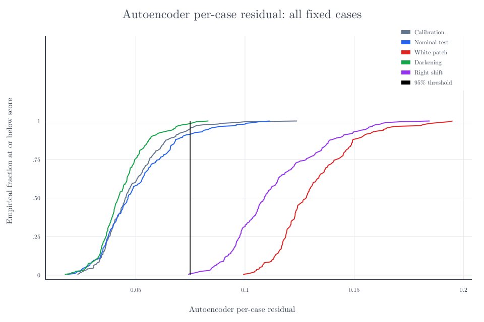
#include <dm/dm.hpp>
int main() {
namespace n = dm::nn;
std::map<std::string, n::Tensor> a;
for (const auto& [k, v] : n::load_npz("build/anomaly/analysis.npz"))
a.emplace(k, v);
const std::string score = "mean";
const double threshold = n::models::NominalThreshold(a.at("validation_" + score + "_score"));
const std::vector<std::string> pools{"validation", "test", "patch", "darkening", "shift"},
labels{"Calibration", "Nominal test", "White patch", "Darkening", "Right shift"};
const std::vector<dm::graphics::RGB> colors{
{100, 116, 139}, {37, 99, 235}, {220, 38, 38}, {22, 163, 74}, {147, 51, 234}};
const auto fraction = n::arange(1, 201, 1, n::DType::Float64) / 200.;
auto plot = dm::graphics::RPlot::create();
for (int i = 0; i < 5; ++i) {
const auto values = a.at(pools[i] + "_" + score + "_score"),
ordered = n::gather(values, n::argsort(values));
plot.lines(ordered.to_vector<double>(), fraction.to_vector<double>(), labels[i], colors[i], 2.);
}
plot.lines({threshold, threshold}, {0, 1}, "95% threshold", {0, 0, 0}, 1.5)
.y_limits(-.03, 1.55)
.y_ticks({0, .25, .5, .75, 1}, {"0", ".25", ".50", ".75", "1"})
.x_label("Fitting-mean per-case residual")
.y_label("Empirical fraction at or below score")
.title("Fitting-mean per-case residual: all fixed cases")
.save_svg("build/anomaly_mean_cdf.svg");
}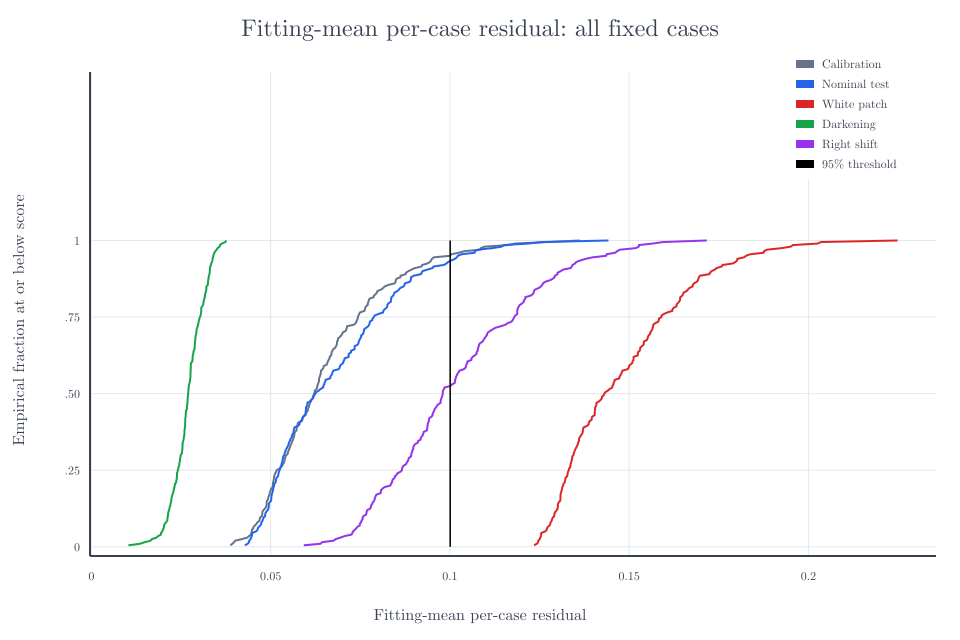
#include <dm/dm.hpp>
int main() {
namespace n = dm::nn;
std::map<std::string, n::Tensor> a;
for (const auto& [k, v] : n::load_npz("build/anomaly/analysis.npz"))
a.emplace(k, v);
const std::string score = "ink";
const double threshold = n::models::NominalThreshold(a.at("validation_" + score + "_score"));
const std::vector<std::string> pools{"validation", "test", "patch", "darkening", "shift"},
labels{"Calibration", "Nominal test", "White patch", "Darkening", "Right shift"};
const std::vector<dm::graphics::RGB> colors{
{100, 116, 139}, {37, 99, 235}, {220, 38, 38}, {22, 163, 74}, {147, 51, 234}};
const auto fraction = n::arange(1, 201, 1, n::DType::Float64) / 200.;
auto plot = dm::graphics::RPlot::create();
for (int i = 0; i < 5; ++i) {
const auto values = a.at(pools[i] + "_" + score + "_score"),
ordered = n::gather(values, n::argsort(values));
plot.lines(ordered.to_vector<double>(), fraction.to_vector<double>(), labels[i], colors[i], 2.);
}
plot.lines({threshold, threshold}, {0, 1}, "95% threshold", {0, 0, 0}, 1.5)
.y_limits(-.03, 1.55)
.y_ticks({0, .25, .5, .75, 1}, {"0", ".25", ".50", ".75", "1"})
.x_label("Absolute mean-ink deviation")
.y_label("Empirical fraction at or below score")
.title("Absolute mean-ink deviation: all fixed cases")
.save_svg("build/anomaly_ink_cdf.svg");
}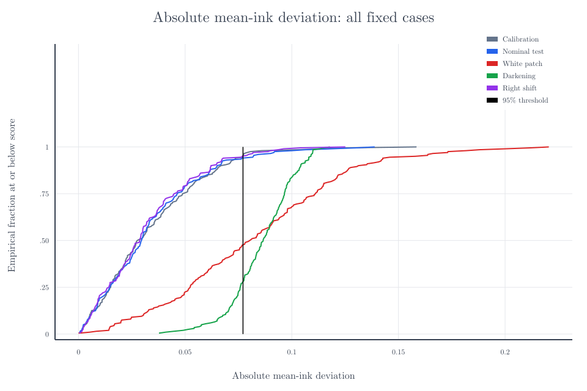
Retain both ranking quality and the fixed operating point
For autoencoder scores, white patches reach AUROC.999275 and TPR1; right shifts reach AUROC.98615 and TPR.995. Darkening instead has AUROC.4028, AP.418652 and TPR.02, below the AP.5 baseline for these equal pools. The mean-image residual has darkening AUROC0 and TPR0. Ink deviation has darkening AUROC.94685 and TPR.72, but shift AUROC.486025 and TPR.05. Nominal test FPR is.09/.07/.06 for AE/mean/ink, versus calibration.05 for all three. These single-pool diagnostics have no significance or real-deployment performance claim.
#include <dm/dm.hpp>
int main() {
namespace n = dm::nn;
std::map<std::string, n::Tensor> a;
for (const auto& [k, v] : n::load_npz("build/anomaly/analysis.npz"))
a.emplace(k, v);
const std::vector<std::string> rules{"ae", "mean", "ink"}, names{"patch", "darkening", "shift"},
labels{"AE residual", "Mean residual", "Ink deviation"};
const std::vector<dm::graphics::RGB> colors{{37, 99, 235}, {220, 38, 38}, {22, 163, 74}};
auto plot = dm::graphics::RPlot::create();
for (int i = 0; i < 3; ++i) {
const auto threshold = n::models::NominalThreshold(a.at("validation_" + rules[i] + "_score"));
std::vector<double> values;
for (const auto& name : names)
values.push_back(
n::models::RankAnomalies(
a.at("test_" + rules[i] + "_score"),
a.at(name + "_" + rules[i] + "_score"),
threshold)
.auroc);
plot.points({0, 1, 2}, values, labels[i], colors[i], 5.);
}
plot.lines({-.3, 2.3}, {.5, .5}, "Chance AUROC", {100, 116, 139}, 1.);
plot.x_limits(-.3, 2.3)
.y_limits(-.03, 1.4)
.x_ticks({0, 1, 2}, {"White patch", "Darkening", "Right shift"})
.x_label("Every200-case paired stress pool")
.y_label("AUROC")
.title("A fixed corruption can reverse a residual ranking")
.save_svg("build/anomaly_auroc.svg");
}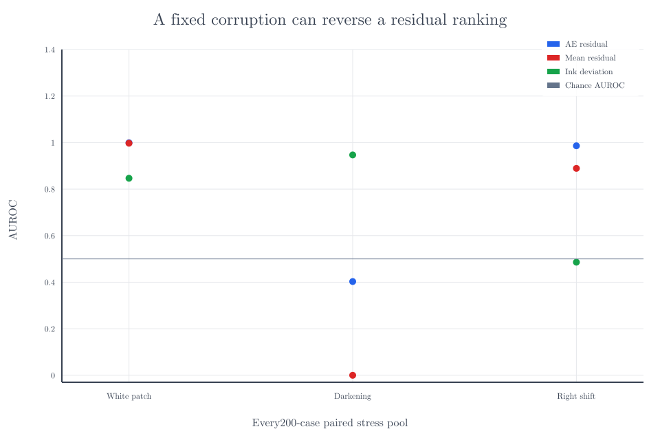
#include <dm/dm.hpp>
int main() {
namespace n = dm::nn;
std::map<std::string, n::Tensor> a;
for (const auto& [k, v] : n::load_npz("build/anomaly/analysis.npz"))
a.emplace(k, v);
const std::vector<std::string> rules{"ae", "mean", "ink"}, names{"patch", "darkening", "shift"},
labels{"AE residual", "Mean residual", "Ink deviation"};
const std::vector<dm::graphics::RGB> colors{{37, 99, 235}, {220, 38, 38}, {22, 163, 74}};
auto plot = dm::graphics::RPlot::create();
for (int i = 0; i < 3; ++i) {
const auto threshold = n::models::NominalThreshold(a.at("validation_" + rules[i] + "_score"));
std::vector<double> values;
for (const auto& name : names)
values.push_back(
n::models::RankAnomalies(
a.at("test_" + rules[i] + "_score"),
a.at(name + "_" + rules[i] + "_score"),
threshold)
.anomaly_tpr);
plot.points({0, 1, 2}, values, labels[i], colors[i], 5.);
}
plot.x_limits(-.3, 2.3)
.y_limits(-.03, 1.4)
.x_ticks({0, 1, 2}, {"White patch", "Darkening", "Right shift"})
.x_label("Every200-case paired stress pool")
.y_label("True-positive fraction at fixed threshold")
.title("A calibrated upper-tail flag can miss almost every darkened image")
.save_svg("build/anomaly_tpr.svg");
}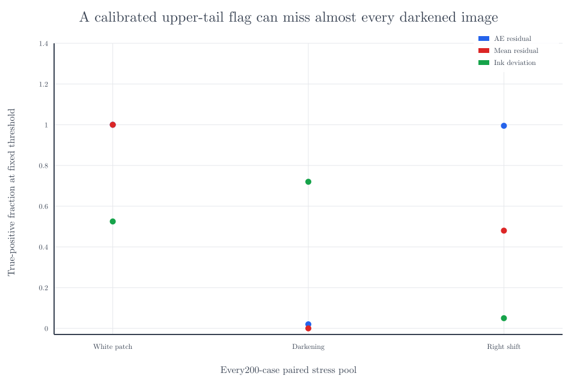
Ten predetermined source rows, split into readable four-column galleries
The source rule is floor(k*199/9), k=0,...,9, retaining the original evenly spaced rows without filtering by detector success. The first gallery shows original/reconstruction/white patch/ patch reconstruction; the second shows darkening/reconstruction/right shift/shift reconstruction. All panels share fixed[0,1] grayscale, threefold nearest-pixel scaling and four-pixel gaps. The source IDs and all AE scores are printed alongside the corresponding program.
#include <dm/dm.hpp>
int main() {
namespace n = dm::nn;
std::map<std::string, n::Tensor> a;
for (const auto& [k, v] : n::load_npz("build/anomaly/analysis.npz"))
a.emplace(k, v);
const auto source = a.at("test_source_ids").to_vector<int>();
std::vector<n::Tensor> tiles;
std::print(
"| row | source ID | nominal AE | patch AE | darkening AE | shift AE "
"|\n|---:|---:|---:|---:|---:|---:|\n");
for (int k = 0; k < 10; ++k) {
const int row = k * 199 / 9;
std::print(
"| {} | {} | {:.9f} | {:.9f} | {:.9f} | {:.9f} |\n",
row,
source[row],
a.at("test_ae_score").at({row}),
a.at("patch_ae_score").at({row}),
a.at("darkening_ae_score").at({row}),
a.at("shift_ae_score").at({row}));
for (const auto& key :
{"test_images", "test_reconstruction", "patch_images", "patch_reconstruction"})
tiles.push_back(n::take_rows(a.at(key), {row}).reshape({1, 28, 28, 1}));
}
n::save_image_grid(
n::concat(tiles, 0), "build/anomaly_cases_patch.png", 4, 0, 1, 4, 220. / 255., 3);
}| row | source ID | nominal AE | patch AE | darkening AE | shift AE |
|---|---|---|---|---|---|
| 0 | 66921 | 0.044068047 | 0.123947205 | 0.049535354 | 0.125216862 |
| 22 | 69602 | 0.029075485 | 0.108117756 | 0.051704916 | 0.096186084 |
| 44 | 62158 | 0.047673783 | 0.128987468 | 0.040025966 | 0.119751641 |
| 66 | 68876 | 0.042010185 | 0.124028558 | 0.035456289 | 0.144943302 |
| 88 | 68434 | 0.066132181 | 0.145307913 | 0.056204598 | 0.095937767 |
| 110 | 62282 | 0.035852760 | 0.117440431 | 0.040086364 | 0.135029223 |
| 132 | 62066 | 0.043522329 | 0.123503055 | 0.057323444 | 0.084409398 |
| 154 | 63525 | 0.073159402 | 0.154852165 | 0.040355711 | 0.099121820 |
| 176 | 64419 | 0.049004902 | 0.129691680 | 0.046945051 | 0.104924157 |
| 199 | 64610 | 0.024867230 | 0.106596215 | 0.036609172 | 0.110878327 |
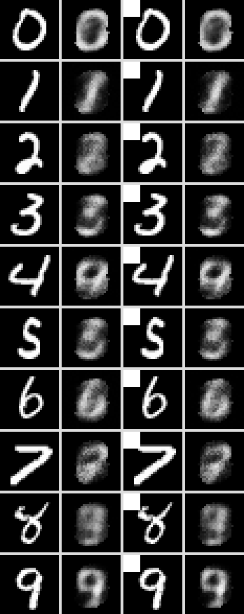
#include <dm/dm.hpp>
int main() {
namespace n = dm::nn;
std::map<std::string, n::Tensor> a;
for (const auto& [k, v] : n::load_npz("build/anomaly/analysis.npz"))
a.emplace(k, v);
const auto source = a.at("test_source_ids").to_vector<int>();
std::vector<n::Tensor> tiles;
std::print(
"| row | source ID | nominal AE | patch AE | darkening AE | shift AE "
"|\n|---:|---:|---:|---:|---:|---:|\n");
for (int k = 0; k < 10; ++k) {
const int row = k * 199 / 9;
std::print(
"| {} | {} | {:.9f} | {:.9f} | {:.9f} | {:.9f} |\n",
row,
source[row],
a.at("test_ae_score").at({row}),
a.at("patch_ae_score").at({row}),
a.at("darkening_ae_score").at({row}),
a.at("shift_ae_score").at({row}));
for (const auto& key :
{"darkening_images", "darkening_reconstruction", "shift_images", "shift_reconstruction"})
tiles.push_back(n::take_rows(a.at(key), {row}).reshape({1, 28, 28, 1}));
}
n::save_image_grid(
n::concat(tiles, 0), "build/anomaly_cases_dark_shift.png", 4, 0, 1, 4, 220. / 255., 3);
}| row | source ID | nominal AE | patch AE | darkening AE | shift AE |
|---|---|---|---|---|---|
| 0 | 66921 | 0.044068047 | 0.123947205 | 0.049535354 | 0.125216862 |
| 22 | 69602 | 0.029075485 | 0.108117756 | 0.051704916 | 0.096186084 |
| 44 | 62158 | 0.047673783 | 0.128987468 | 0.040025966 | 0.119751641 |
| 66 | 68876 | 0.042010185 | 0.124028558 | 0.035456289 | 0.144943302 |
| 88 | 68434 | 0.066132181 | 0.145307913 | 0.056204598 | 0.095937767 |
| 110 | 62282 | 0.035852760 | 0.117440431 | 0.040086364 | 0.135029223 |
| 132 | 62066 | 0.043522329 | 0.123503055 | 0.057323444 | 0.084409398 |
| 154 | 63525 | 0.073159402 | 0.154852165 | 0.040355711 | 0.099121820 |
| 176 | 64419 | 0.049004902 | 0.129691680 | 0.046945051 | 0.104924157 |
| 199 | 64610 | 0.024867230 | 0.106596215 | 0.036609172 | 0.110878327 |
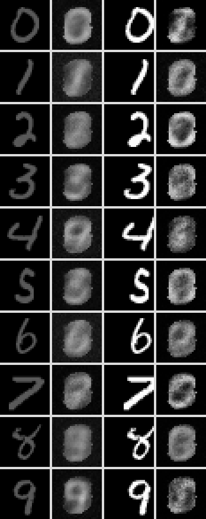
The blank input is a separate degenerate control
The blank's AE residual is.213015503541, above the nominal AE threshold.074898541875. Its reconstruction is a learned decoder response, not a sampled pixel image. This one control is not inserted into any normal/transformed ranking pool or used to tune the model/threshold.
#include <dm/dm.hpp>
int main() {
namespace n = dm::nn;
std::map<std::string, n::Tensor> a;
for (const auto& [k, v] : n::load_npz("build/anomaly/analysis.npz"))
a.emplace(k, v);
const double score = a.at("blank_ae_score").item(),
threshold = n::models::NominalThreshold(a.at("validation_ae_score"));
std::print(
"Blank AE score {:.12f}; threshold {:.12f}; strict flag {}. Excluded from all nine "
"rankings.\n",
score,
threshold,
score > threshold);
n::save_image_grid(
n::concat({a.at("blank_image"), a.at("blank_reconstruction").reshape({1, 28, 28, 1})}, 0),
"build/anomaly_blank.png",
2,
0,
1,
4,
220. / 255.,
3);
}Blank AE score 0.213015503541; threshold 0.074898541875; strict flag true. Excluded from all nine rankings.
Fidelity and scope
The canonical API owns per-case residual/ink arithmetic, explicit nearest-rank calibration, canonical ROC/AP adaptation and detached fixed stress transforms. The report owns the visible prerequisite, pool selection, threshold policy, complete artifact IO and figures. Both original archives/3,198,145 values, all nine TSV rows, JSON values and ten original PNG strips are preserved exactly. Initial/selected prerequisite checkpoints reproduce101,984 parameter values; application inference checks all50,992 model values for immutability and adds zero updates. Timing of the prerequisite is measured anew.
An optional independent NumPy development check verifies1,568,784 forward values,6,001 exact scores and470,400 exact corrupted pixels, fitting-reference accumulation, all thresholds and strict/tied controls. Maximum widened forward error is below3.6e-7. It prepares no data and fits no model. These synthetic paired stress results do not establish real outlier detection, class rejection or calibrated deployment error rates. Validation reuse and unfiltered failures remain part of the result.
References
- R stats. [Sample Quantiles](https://stat.ethz.ch/R-manual/R-devel/library/stats/html/quantile.html). The explicit nearest-rank rule corresponds to inverse empirical-CDF selection with no fuzz.
- Scikit-learn. [ROC AUC](https://scikit-learn.org/stable/modules/generated/sklearn.metrics.roc_auc_score.html) and [Average Precision](https://scikit-learn.org/stable/modules/generated/sklearn.metrics.average_precision_score.html). Ranking uses canonical tied comparisons and noninterpolated group-endpoint AP.